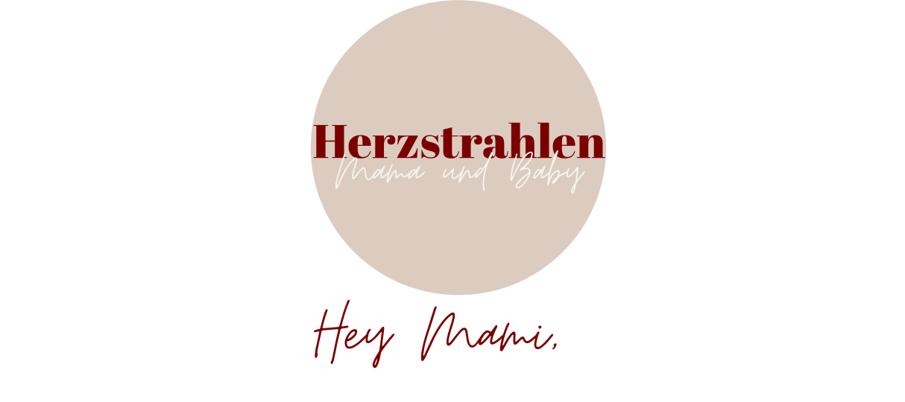
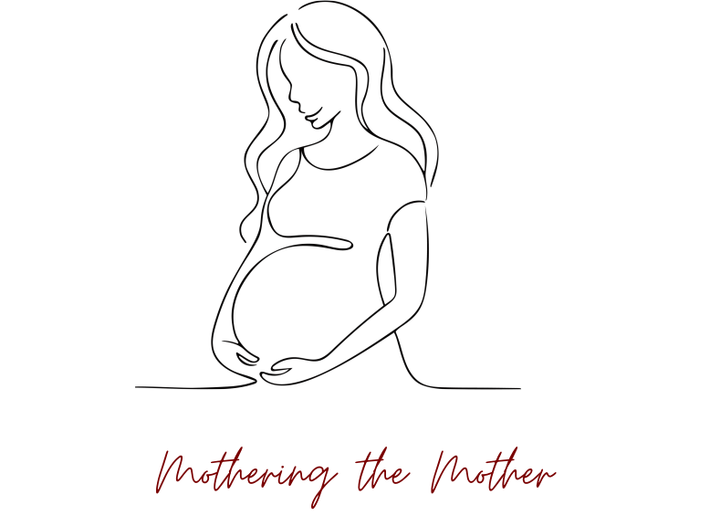

ich bin Simone und stehe Dir als Mütterpflegerin achtsam während dem Wochenbett zur Seite – mit liebevoller Begleitung, alltagsnaher Hilfe und einem offenen Herzen für Deine ganz persönliche Reise ins Mama-Sein.
Mehr erfahrenWas ist
Mütterpflege?
Mütterpflege ist eine unterstützende Begleitung für Frauen in der Schwangerschaft und im Wochenbett. Sie bietet praktische Hilfe im Alltag, emotionale Unterstützung und entlastet dort, wo Kraft und Energie gerade gebraucht werden. Eine Mütterpflegerin sorgt dafür, dass sich die Mutter erholen, Wunden heilen, ankommen und sich ganz auf sich und ihr Baby konzentrieren kann.
WICHTIG: Eine Mütterpflegerin ersetzt keine Hebamme und übernimmt keine medizinischen Aufgaben, sondern ergänzt die Hebammenbetreuung durch alltagsnahe Unterstützung und liebevolle Entlastung.

Über
mich
Ich heiße Simone – bin Mütterpflegerin und Mama von zwei Kindern. Seit der Geburt meines ersten Kindes hat mich das Thema Schwangerschaft, Geburt und die große Veränderung, die das Mama-Werden und Mama-Sein mit sich bringt, nie losgelassen. Besonders fasziniert hat mich dabei das Wochenbett… Das Kind ist geboren und dadurch startet die spannende Reise ins Mama-Sein.
Manchmal ist diese Zeit jedoch sehr herausfordernd. Besonders, wenn bei der Geburt Verletzungen entstanden sind, die Zeit und Ruhe benötigen, um zu heilen. Der Körper hat Großes geleistet, die Hormone fahren Achterbahn und dann ist da dieses kleine zauberhafte Neu-Mensch…
Eine spannende, herausfordernde Zeit, in der Unterstützung nicht fehlen darf, um voll und ganz dieses kleine Herzlein in seinen Armen genießen zu können.
Meine
Leistungen
Raum für Heilung
Ich halte dein Baby und versorge es, damit du dich ausruhen, schlafen und wieder zu Kräften kommen kannst.
Emotionale Begleitung
Ich begleite dich mit Ruhe, Verständnis und einem offenen Ohr. Hier darf alles da sein… Freude, Tränen, Unsicherheit, Überforderung.
Babyheilbad
Nach Brigitte Meißner – ein wunderschönes Ritual, das Nähe und Geborgenheit schenkt. Ein geschützter Moment zwischen dir und deinem Baby.
Stärkende Kleinigkeiten
Der Thermomix ist mein bester Freund. Ich versorge dich mit nährenden und stärkenden Kleinigkeiten.
Akute Mama-Entlastung
Migräne? Erschöpfung nach einer schlaflosen Nacht? Kurzfristige Notfallbegleitung – schnelle Entlastung und ein geschützter Moment für Dich.
Kontakt
Nehme gerne Kontakt auf und schreibe mir oder melde dich unter folgender Nummer bei mir.